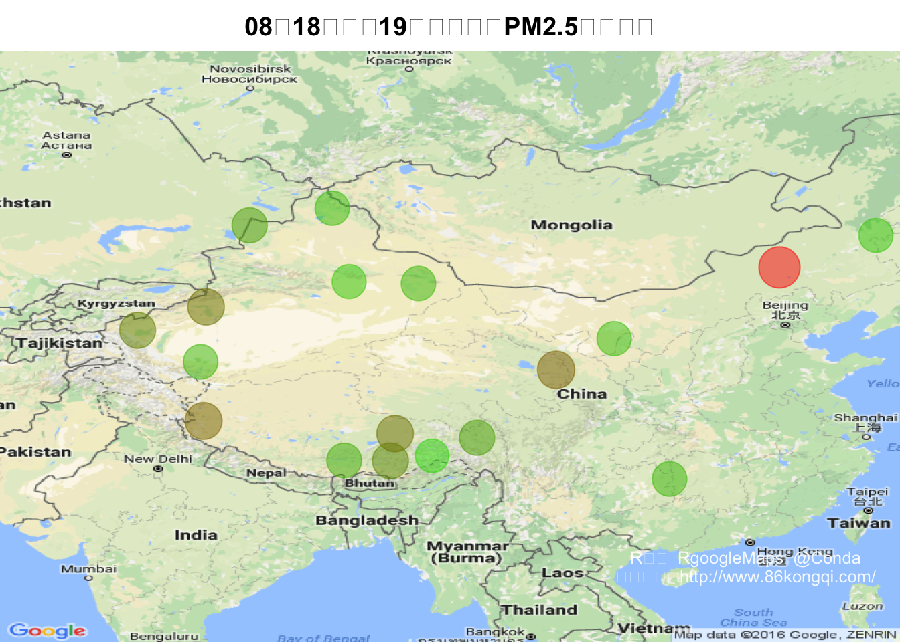
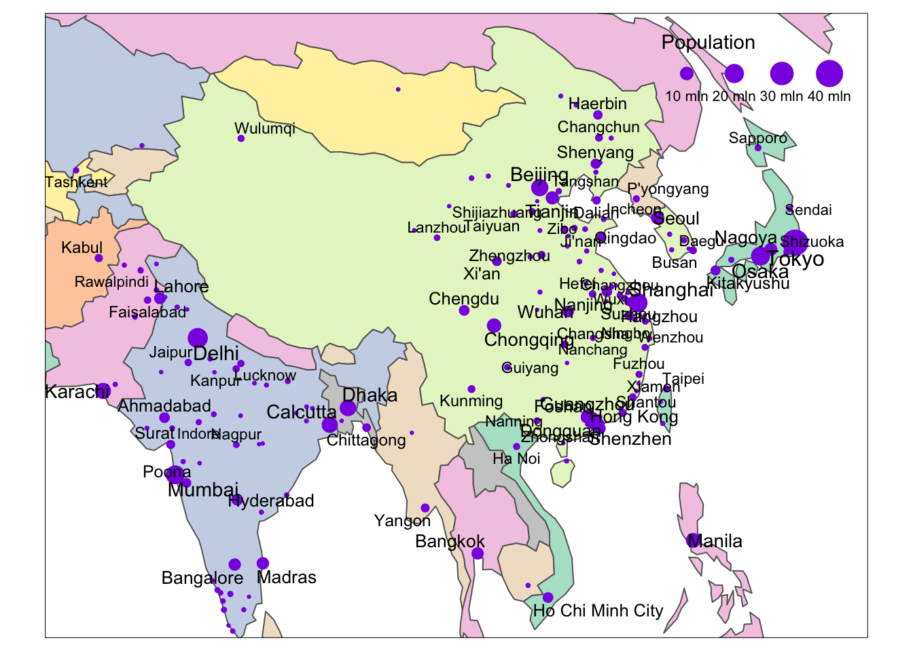

library(RgoogleMaps)
library(RCurl)
library(XML)
Start = Sys.time()
day = 13
skip = 0
website = "http://www.86kongqi.com/"
pm = getURL(website,.encoding="UTF-8")
pmweb = htmlParse(pm,encoding="UTF-8")
pmtotal = getNodeSet(pmweb,"//div[@class='wrap']//a")
pmurl = sapply(X=pmtotal,FUN=xmlGetAttr,name="href")
#pmcityA = getNodeSet(pmtotal[[1]],"//strong")
pmcity = sapply(X=pmtotal,FUN=xmlValue)
pmcity = gsub(pattern="[A-Z]",replacement="",x=pmcity)
index = match(c("黄山","菏泽","九华山风景区","恩施州","黄冈","随州"),table=pmcity)
pmcity = pmcity[-index]
pmurl = pmurl[-index]
read.csv("China.Cities.Location.Linux.csv")->China
which(pmcity %in% China$city)->ind1
which(China$city %in% pmcity)->ind2
result<-China[ind2,]pmurl[ind1]->pmurl
pmcity[ind1]->pmcity
data = NULL
date = NULL
ii=0;
for( i in pmurl)
{
ii<-ii+1
cat(paste("Get data for",result$city[ii],"... ...\n"))
cityweb = getURL(url=paste(website,i,sep=""),.encoding="UTF-8")
cityweb = strsplit(x=cityweb,split="flashvalue")[[1]]
cityweb = cityweb[grepl(pattern="set name",x=cityweb)]
cityweb = cityweb[grepl(pattern="月",x=cityweb)]
pm = NULL
if(length(cityweb) == 0)
{
cat("Date is incorrect... skip...\n")
next
}
for(j in cityweb[day])
{
j = cityweb[day]
tmp = strsplit(x=j,split="\\s")[[1]]
name = tmp[grepl(pattern="name",x=tmp)]
name = strsplit(x=name,split="\\'")[[1]][2]
value = tmp[grepl(pattern="value",x=tmp)]
value = as.numeric(strsplit(x=value,split="\\'")[[1]][2])
rm(tmp)
pm = cbind(pm,value)
}
if(!is.null(date))
{
if(date != name)
{
cat("Date is incorrect... skip...\n")
skip = skip + 1
next
}
}else{
date = name
}
data = rbind(data,cbind(city=as.vector(result$city[ii]),pm))
}## Get data for 兴安盟 ... ...
## Get data for 锡林郭勒盟 ... ...
## Get data for 阿拉善盟 ... ...
## Get data for 大兴安岭地区 ... ...
## Get data for 铜仁地区 ... ...
## Get data for 昌都地区 ... ...
## Get data for 山南地区 ... ...
## Get data for 日喀则地区 ... ...
## Get data for 那曲地区 ... ...
## Get data for 阿里地区 ... ...
## Get data for 林芝地区 ... ...
## Get data for 海东地区 ... ...
## Get data for 吐鲁番地区 ... ...
## Get data for 哈密地区 ... ...
## Get data for 阿克苏地区 ... ...
## Get data for 喀什地区 ... ...
## Get data for 和田地区 ... ...
## Get data for 塔城地区 ... ...
## Get data for 阿勒泰地区 ... ...lon = result[,3]
lat = result[,2]
pm = as.numeric(data[,2])
tp.pm = GetMap.bbox(lonR=lon,latR=lat)
pm.max = max(pm)
red = seq(from=0,to=1,length.out=pm.max)
green = seq(from=1,to=0,length.out=pm.max)
blue = seq(from=0,to=0,length.out=pm.max)
col = rgb(red=red,green=green,blue=blue,alpha=0.5)
col = col[pm]
cex = pm/100 + 5
suppressWarnings(expr=PlotOnStaticMap(MyMap=tp.pm,lat=lat,lon=lon,pch=20,col=col,cex=cex,mar=c(0,0,2,0)))
title(main=paste(date,"全国",length(pm),"个主要城市PM2.5分布情况",sep=""))
text.col = rgb(red=1,green=1,blue=1,alpha=0.9)
text(x=210,y=-250,labels=paste("数据来源：",website,sep=""),cex=0.8,col=text.col)
text(x=210,y=-230,labels="R语言 RgoogleMaps @Conda",cex=0.8,col=text.col)
Stop = Sys.time()
Cost = Stop - Start
cat(paste("\n\n\nIt cost",Cost,"minutes.\n"))##
##
##
## It cost 22.7657318115234 minutes.cat(paste("Gather",length(pm),"cities pm 2.5 data, and skip",skip,"city for incorrect date."))## Gather 19 cities pm 2.5 data, and skip 0 city for incorrect date.
Copyright © 2016 Skynet, Inc. All rights reserved.